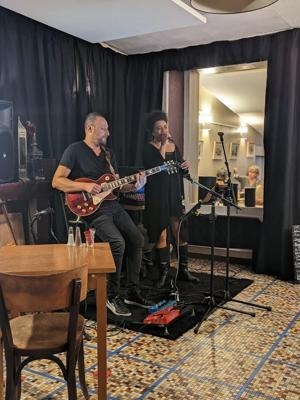
Concerts, chez nous
Un duo qui s’installe sur la mosaïque, les tables qu’on pousse un peu. Programme affiché en vitrine. [Agenda à confirmer]
Bistrot de quartier · Haute-Île · Rezé
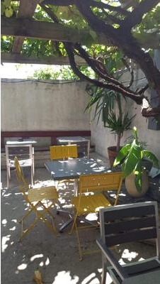
Une maison de la Haute-Île où l’on mange ce qui est écrit à l’ardoise, où la cour est plantée d’une vraie vigne, et où il se passe toujours quelque chose : un concert, un vide-dressing, un anniversaire.
Au 29 rue des Chevaliers, entre les maisons basses de la Haute-Île, Les Isles est de ces adresses que le quartier se passe de bouche à oreille.
Une salle au sol de mosaïque ancienne, un comptoir qui sert aussi d’épicerie, des assiettes généreuses — frites maison, œufs mimosa, plats mijotés — et une cour cachée où la vigne fait l’ombre l’été. Rien de décoratif : tout ici sert depuis longtemps, et c’est exactement ce qui fait envie.
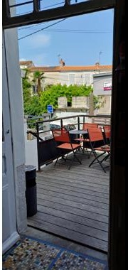
cuisine maison — ça change selon le marché
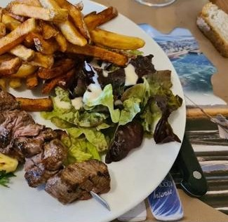
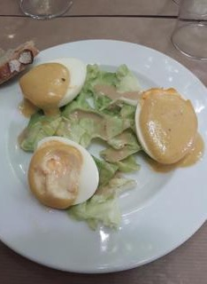
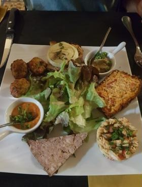
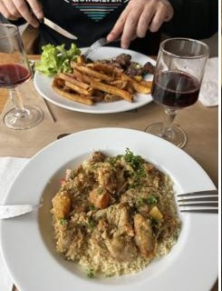
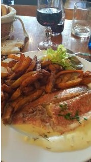
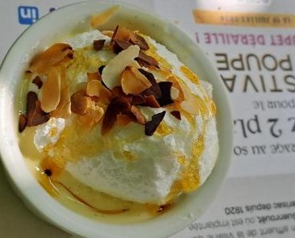
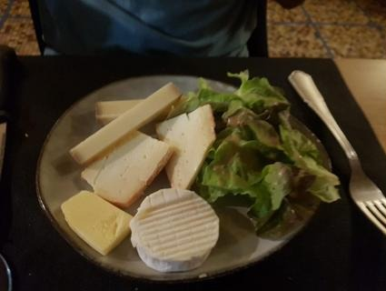
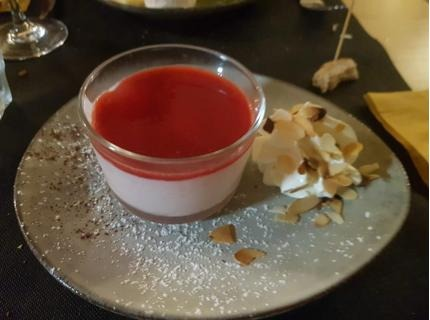
Une vigne dans la cour, une mosaïque au sol, une terrasse sur la rue.
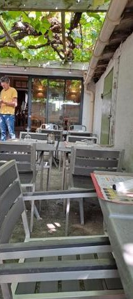
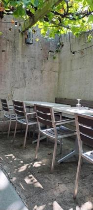
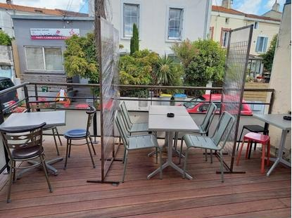
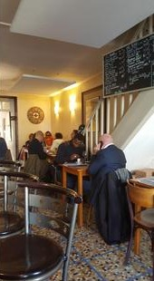
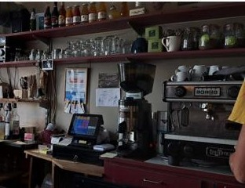
Plus qu’un resto : une maison de quartier. La preuve, punaisée ci-dessous.

Un duo qui s’installe sur la mosaïque, les tables qu’on pousse un peu. Programme affiché en vitrine. [Agenda à confirmer]
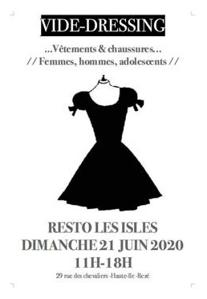
Les portants au milieu des tables, un verre à la main. Une institution maison — l’affiche est d’origine.
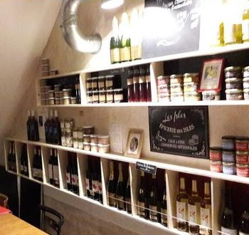
Cave à vins & conserves artisanales, comme l’annonce l’ardoise au-dessus des étagères. On repart avec une bouteille.
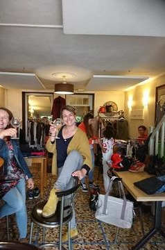
Anniversaires, apéros qui s’étirent, bières artisanales à la tireuse. Le quartier trinque ici.
[Horaires à confirmer — appelez avant de venir]
Par téléphone, tout simplement. [Modalités à confirmer]
Itinéraire →